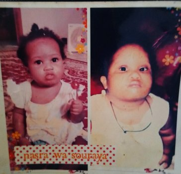

mahamat kabir
ux designer
je suis un developper front back et front ent apres avoir fini avec les deux je program faire le reseau parceque je crois qu il devient de plsu en plus important sur le marche mondiale et ce que nous utilision dans jour dans la vie quotidienne.